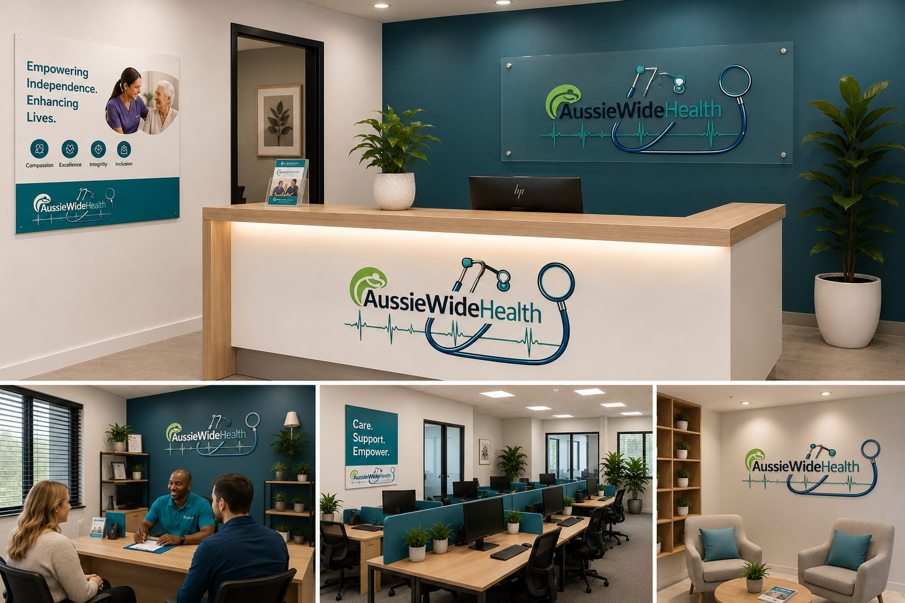

Wilson Mapanga
RN, BN, MBA, MPM, MPH, Grad Dip Occupational Health & Safety
Over 20 years in acute nursing, emergency, orthopaedics and executive healthcare leadership.
Aussie Wide Disability and Health Services Pty Ltd was founded by healthcare professionals dedicated to high-standard, ethical and person-centred NDIS support.
AussieWide Health is based in Heathwood, Queensland and supports participants across Brisbane and surrounding communities. Our work is guided by safety, dignity, participant choice and practical care that improves everyday life.
We combine clinical experience with responsive, human support so participants and families can feel informed, respected and confident.

The service is shaped by more than two decades of clinical, emergency, critical care, public health and healthcare leadership experience.
RN, BN, MBA, MPM, MPH, Grad Dip Occupational Health & Safety
Over 20 years in acute nursing, emergency, orthopaedics and executive healthcare leadership.
RN, Critical Care Nursing Certificate, Bachelor of Public Health (Distinction)
Over 20 years in acute care, ICU, wound care, surgical and public health nursing.

Our mission is to empower individuals living with disability by delivering safe, professional and personalised services that promote independence and quality of life.
Start with a friendly conversation about your support needs.